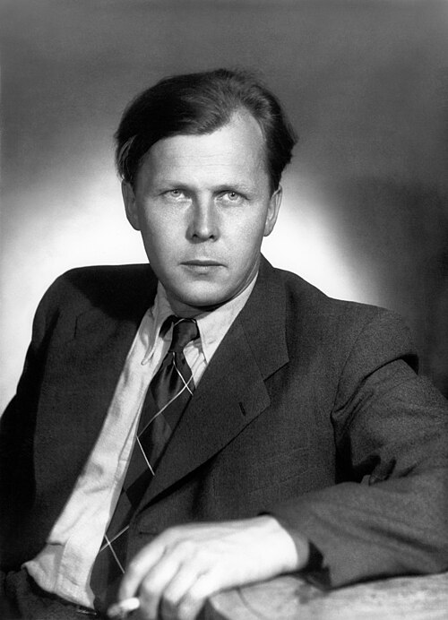

О проекте
Web-сайт, посвящённый А. Т. Твардовскому — это информационно-образовательный ресурс, объединяющий ключевые факты биографии, анализ творческого пути и материалы о культурном наследии выдающегося русского советского поэта, прозаика и журналиста (1910–1971).
Александр Трифонович Твардовский — явление уникальное в русской литературе XX века. Поэт, чьё творчество стало «летописью эпохи», редактор, превративший журнал «Новый мир» в главный оппозиционный голос страны, военный корреспондент, прошедший две войны и создавший «Книгу про бойца», которую читали в окопах. Высокую оценку его творчеству давали Иван Бунин, Борис Пастернак, Анна Ахматова.
Сайт ориентирован на студентов, школьников, преподавателей и всех, кто интересуется русской литературой XX века. Здесь вы найдёте полную хронику жизни, подробный обзор главных произведений, историю создания легендарной поэмы «Василий Тёркин», а также сведения о редакторской деятельности Твардовского в журнале «Новый мир», ставшем «рупором оттепели».
Навигация интуитивно понятна, а адаптивный дизайн делает просмотр комфортным с любых устройств.
📅 Ключевые вехи жизни и творчества
1910–1930-е
- 1910 — Рождение на хуторе Загорье
- 1925 — Первая публикация
- 1936 — Поэма «Страна Муравия»
- 1939–1940 — Участие в финской войне
1941–1945
- 1941–1945 — Военный корреспондент
- 1942–1945 — «Василий Тёркин»
- 1945 — «Дом у дороги»
- 1946 — Сталинская премия
1950–1971
- 1950–1970 — Редактор «Нового мира»
- 1960 — «За далью — даль»
- 1962 — Публикация Солженицына
- 1971 — Кончина поэта
📚 Что вы найдёте на сайте
- 📖 Биография
- Детство на хуторе Загорье и первые публикации
- Учёба в Смоленске и МИФЛИ
- Военные годы: от финской войны до Победы
- Последние годы и неопубликованное наследие
- ✍️ Творчество
- Лирика: «Я убит подо Ржевом», «Памяти матери»
- Поэмы: «Страна Муравия», «Василий Тёркин»
- Проза: «Родина и чужбина»
- 🎖️ Поэма «Василий Тёркин» — история создания, образ героя
- 📰 Журнал «Новый мир» — эпоха Твардовского
«Нет, жизнь не обманула меня, не обошла стороной. Всё, что было, — было к месту.»
— А.Т. Твардовский из «Рабочих тетрадей»